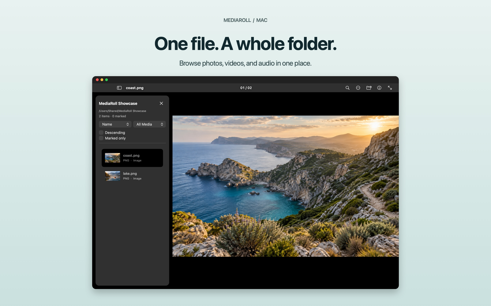

MEDIAROLL · FOR MAC
Your media,
in one place.
Open one file. Explore the whole folder. Browse photos, videos, and audio without importing a library or creating an account.

A calmer way to review your files.
Pick favorites, compare images, crop and straighten, resize and export. Media processing stays on your Mac.
30-day free trial, then an optional one-time Lifetime Unlock. No subscription or automatic charge. Requires macOS 14 or newer.